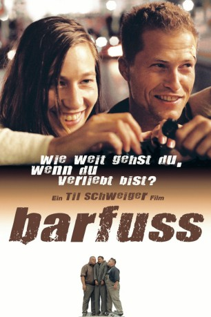
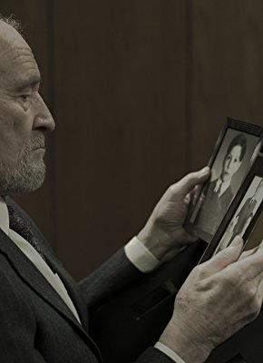

#4578 Barfuss
 
 IMDB-Wertung: 7.2 / 10
IMDB-Wertung: 7.2 / 10  Metascore: 0
Metascore: 0 
Nick Keller ist ein Taugenichts wie er im Buche steht. Keine Kohle in der Tasche und eine Affäre nach der anderen. Als der Loser jedoch bei einem Job in der Psychiatrie zufällig den Selbstmord einer jungen Frau verhindert, ist nichts mehr so, wie es einmal war. Denn Leila weicht ihrem Retter nicht mehr von der Seite. Widerwillig nimmt Nick die Klette mit auf die Hochzeit seines Bruders - und so beginnt für das ungleiche Duo eine wahnwitzige Odyssee, an deren Ende einmal mehr die Liebe alle Schranken niederzureißen vermag.
Jahr: 2005
Dauer: 110 Minuten
FSK: 6
Land: Deutschland Studio: Buena Vista InternationalTonspuren:
Untertitel:
Auflösung: 1080p (1920x1040) Größe: 6236 MB
Genre: Drama, Komödie, Liebe
Regisseur:  Til Schweiger
Til Schweiger
Drehbuch: Kazuki Nakashima
Soundtrack:
Darsteller:
- Florian Fitz als Beamter
 Michael Gwisdek als Bahnangestellter
Michael Gwisdek als Bahnangestellter- Eric Judor als Freier
 Paula Paul als Schwester Dorothee
Paula Paul als Schwester Dorothee Armin Rohde als Penner
Armin Rohde als Penner- Dana Schweiger als Krankenschwester
 Til Schweiger als Nick Keller
Til Schweiger als Nick Keller- Nadja Tiller als Frau Keller
 Jürgen Vogel als Hausmeister
Jürgen Vogel als Hausmeister Steffen Wink als Viktor Keller
Steffen Wink als Viktor Keller Johanna Wokalek als Leila
Johanna Wokalek als Leila- Hans-Peter Abts als Freundlicher Nachbar
- Gustav Adolph als Pfleger
- Micha Breidenstein als Polizist II Bahnhof
 Piet Fuchs als Hanno
Piet Fuchs als Hanno- Metin Ilica als Zugschaffner
- Béatrice Jean-Philippe als Haushälterin
- Mark Keller als Ehrmann
- Gerit Kling als Bordsteinschwalbe
- Imogen Kogge als Dr. Blöchinger
- Janine Kunze als Sarah Sommer
-  Michael Mendl als Heinrich Keller
 Alexandra Neldel als Janine
Alexandra Neldel als Janine- Mark Popp als Busschaffner
- Ray Collins Hot Club als Hochzeitsband
- Tyron Ricketts als Manager I
- Fanny Staffa als Nele
 Stefanie Stappenbeck als Jessica
Stefanie Stappenbeck als Jessica- Axel Stein als Dieter Huhn
- Erik Lee Steingröver als Gefängniswärter
- Martin Tilleman als Polizist III Bahnhof
- Liv Tullia als Frau Nagelbeere
- Herman Wirtz als Manager II
 Erdal Yildiz als Polizist I Klinik
Erdal Yildiz als Polizist I Klinik- Markus Maria Profitlich als Stefan Huhn
- Christoph Müller-Leonhardt als Hr. Richard
- Evangelos Pananos als Nebenmann
- Silke Rosenbusch als Bordsteinschwalbe
- Bernhard Marsch als Geschäftsmann auf dem Klo / Hochzeitsgast , uncredited
Datei: X:\2005(A-F)\Barfuss (2005, FSK6, 1920x1040).mkv seit 18.10.2016
Festplatte: HD 2003-2004-2005(A-F)
 Es gibt insgesamt 49 Filme in der Gruppe '2005(A-F)'
Es gibt insgesamt 49 Filme in der Gruppe '2005(A-F)'